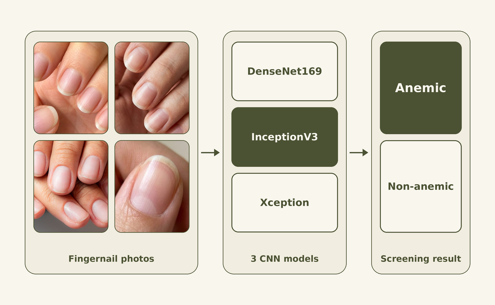
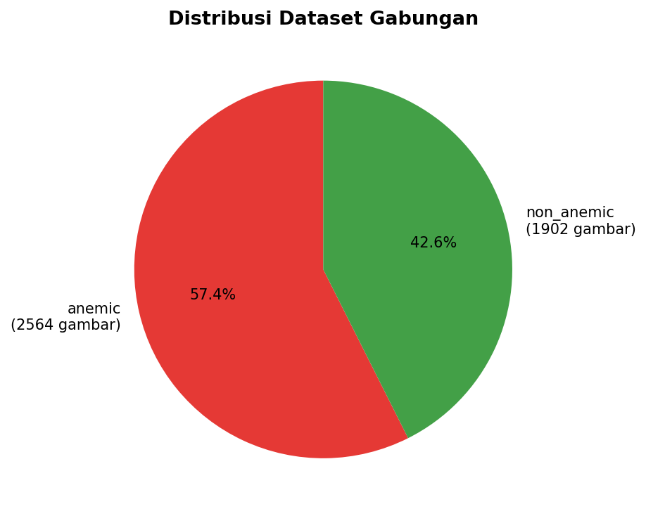

AI/ML, Research, Team project
Anemia Detection
A research project that screens for anemia from fingernail photos, with no blood draw needed. Three pre-trained CNNs (DenseNet169, InceptionV3, and Xception) are compared on the same test set.

The problem
Anemia means too little haemoglobin (Hb), the protein that carries oxygen in the blood. Here, Hb below 11 g/dL counts as anemic. It is usually confirmed with a blood test, which is hard to reach in areas with limited lab access.
Blood tests are costly
- A Complete Blood Count is invasive and needs lab facilities and trained staff
- It costs roughly Rp100,000 to 300,000 per test in Indonesia
Eyeballing is unreliable
- Pale nail beds are a known clinical sign of anemia
- Manual inspection is reported at only 50 to 70% accuracy, because of observer bias, lighting, and skin tone
The approach
- Binary classification: anemic vs non-anemic, straight from a fingernail photo
- Lighting normalisation and nail-region extraction before the CNN
- Meant as a screening aid, not a diagnosis
Results at a glance
The evaluation figures from the experiments: the model comparison first, then a confusion matrix and training curves for each model. Click any figure to see it full size.
Model comparison
The three models on the same 670 test images, and a quick guide to the numbers.
How to read the numbers
- Accuracy: the share of all test photos classified correctly
- Recall (anemic): of the photos that really are anemic, the share the model caught. Missing one is the costly mistake in screening
- Precision (anemic): of the photos the model flags as anemic, the share that really are
- AUC-ROC: how well the model separates the two classes across all decision thresholds. 1.0 is perfect, 0.5 is guessing
Confusion matrices
Rows are the true class and columns are the model’s prediction. The top-right cell counts anemic photos the model missed.
The DenseNet169 plots come from re-evaluating its saved best weights on the same test split (evaluate_densenet.py in the GitHub repo). This reproduced the reported metrics exactly: 90.90% accuracy and 0.9550 AUC-ROC.
Training curves
Accuracy and loss on the training and validation sets, epoch by epoch.
Data
Two public datasets were combined and labelled by haemoglobin level: Hb below 11 g/dL is anemic, 11 g/dL or above is non-anemic.
| Dataset | Anemic | Non-anemic | Total |
|---|---|---|---|
| Ghana (Mendeley Data) | 2,521 | 1,695 | 4,216 |
| Skin & fingernails (Figshare) | 43 | 207 | 250 |
| Combined | 2,564 | 1,902 | 4,466 |
Sources: Asare et al., “Detection of Anemia Using Colour of the Fingernails Image Datasets from Ghana” (Mendeley Data, 2022), and Yakimov et al., “Dataset of Human Skin and Fingernails Images for Non-Invasive Haemoglobin Level Assessment” (Scientific Data, 2024). For the second dataset, labels come from the haemoglobin column in its metadata. The Ghana dataset’s 4,216 images are 710 original photos plus augmented copies made by its authors.

Preparing the data
- Labels come from haemoglobin levels, with g/L values converted to g/dL where needed
- Training adds its own augmentation on the fly, so it creates no new files. The Ghana dataset, however, already ships with augmented copies
- The split is stratified, so each subset keeps the same anemic to non-anemic ratio
How it works
A sequential pipeline from raw photo to evaluated model.
Lighting fix
CLAHE evens out the contrast in the lightness channel of the LAB colour space, so photos taken under different lighting look more alike.
Nail region
The nail is cut out with the bounding boxes in the dataset metadata. Where there are none, YCbCr colour segmentation keeps the skin-coloured pixels.
Resize
Every image becomes 224 × 224 pixels, the size the CNNs expect, with pixel values scaled to 0 to 1.
Split
A stratified 70/15/15 split: about 3,126 images to train, 670 to tune and stop early (validation), and 670 for the final test.
Train
Transfer learning in two phases: first only a new classification head is trained on top of a frozen pre-trained network, then its top 30 layers are fine-tuned with a smaller learning rate.
Why these three models
- DenseNet169: strong feature reuse and sensitivity to subtle colour differences
- InceptionV3: captures visual features at multiple scales
- Xception: efficient, using depthwise separable convolutions
Training setup
- Adam optimizer (learning rate 1e-4, then 1e-5 for fine-tuning), batch size 16, up to 20 epochs for the frozen phase and up to 50 for fine-tuning, with early stopping
- Online augmentation: horizontal flip, brightness changes, and rotation up to ±20°
- TensorFlow / Keras, same settings for all three models; the best weights are kept by validation accuracy
Results
All three models were tested on the same 670 images (385 anemic, 285 non-anemic) with identical preprocessing.
| Metric | DenseNet169 | InceptionV3 | Xception |
|---|---|---|---|
| Accuracy | 90.90% | 91.94% | 80.45% |
| Precision | 90.90% | 91.94% | 80.48% |
| Recall | 90.90% | 91.94% | 80.45% |
| F1-score | 90.90% | 91.92% | 80.23% |
| AUC-ROC | 0.9550 | 0.9703 | 0.8747 |
| Anemic precision | 92.19% | 92.11% | 80.24% |
| Anemic recall | 91.95% | 94.03% | 87.53% |
| Non-anemic recall | 89.47% | 89.12% | 70.88% |
| Training stability | Good | Best | Moderate |
Same table as in the paper, plus anemic recall, which comes from the confusion matrices. Precision, recall, and F1 are weighted averages over both classes, which is why weighted recall equals accuracy. Anemic precision, anemic recall, and non-anemic recall are per class. Training stability is a qualitative judgement from the training curves.
Why recall matters here
- InceptionV3 caught 362 of the 385 anemic cases and missed 23
- DenseNet169 missed 31 (91.95% recall) and Xception missed 48 (87.53%)
- For screening, a missed anemic patient costs more than a false alarm, so the anemic-class recall is the number to watch
What went wrong with Xception
- Its loss spiked when it switched to fine-tuning, at epoch 21
- The curves came back to about their pre-spike level, but training stopped at epoch 30 with validation accuracy near 82%, while InceptionV3 ran all 70 epochs. The spike probably hurt, but it was not tested as the cause of the 80.45% against 90 to 92% for the other two
Limits and next steps
Limitations
- The split was done per image. The Ghana dataset’s 4,216 images are 710 original photos plus augmented copies, so near-duplicates can land in both train and test, and the scores are probably optimistic
- Classes are imbalanced (2,564 anemic vs 1,902 non-anemic), and the second dataset has only 250 images, 43 of them anemic
- Binary labels are hard to judge near the 11 g/dL threshold, where the visual difference is subtle
- The two datasets are preprocessed differently (YCbCr segmentation vs bounding boxes) and have very different class mixes, so a model could partly learn which dataset a photo came from
- Each model was trained once on a single split, so there is no cross-validation or confidence interval
- No Grad-CAM yet, no external dataset, and no testing in a real clinical setting
Next steps
- Re-split by original photo and patient, then re-evaluate all three models
- Grad-CAM to check that the model looks at the nail bed
- EfficientNet and Vision Transformer
- More skin tones and lighting conditions, then clinical validation
Research poster
The project was also presented as a research poster for the course. Click it to see it full size.
My contribution
A team project for the Research Methodology in Computer Science course at BINUS University, built by three people (Group 3). I implemented the three models, ran the experiments, and produced the research poster, and like the rest of the team I also helped with the literature review and writing the paper.
What I did
- Implemented the three models and ran all the experiments
- Contributed to the Methodology and Results & Discussion sections
- Planned, prepared, edited, and produced the research poster
Done together
- Choosing the research topic and discussing the methodology
- Literature review and conclusion
- Final writing, review, and revision of the paper